Mining Guide
Mining is the skill where you prospect and mine ore to later train the other skill smithing. Mining is a more involved skill where you can not so much look away from the screen for most of it. It is an extremely valuable skill and is completely worth training.
| Mining Level |
Resource |
Image |
| Level 1 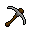 | Bronze Pickaxe | 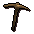 |
| Level 1 | Iron Pickaxe | |
| Level 6 | Steel Pickaxe | 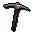 |
| Level 21 | Mithril Pickaxe | 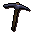 |
| Level 31 | Addy Pickaxe | 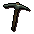 |
| Level 41 | Rune Pickaxe | 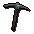 |
| Level 61 | Inferno Adze | 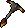 |
| Mining Level |
Resource |
Image |
| Level 1 | Clay | 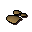 |
| Level 1 | Copper | 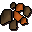 |
| Level 1 | Tin | 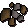 |
| Level 15 | Iron | |
| Level 20 | Silver | 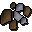 |
| Level 30 | Coal | 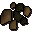 |
| Level 55 | Mithril | 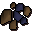 |
| Level 70 | Addy | |
| Level 85 | Runite | 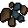 |
Shooting Stars
Shooting stars are a D&D added in 2008. They can be found using the telescope in the player owned house, but in 2009scape, in order
to have players more actively go for them we have added an announcement in chat to say when one lands or when a player has found one.
You can learn more on our shooting stars guide located here.
The D&D also gives you a small mining boost. After turning in your stardust to the starsprite you get a small chance to mine two ores at once and
it lasts up to 15 minutes.
Gems
When mining gems you may find a gem in the rock. You can have higher chance to finding a gem by
wearing a charged amulet of glory. The higher your mining level the higher the possibility of finding
a gem while mining a rock.
You are able to mine gem rocks as well at level 40 mining. The most common spot to find these gem rocks are in
Shilo village. They do take quite awhile to mine so keep this in mind if you are thinking about using this as your
gem collection method.
Limestone, Sand Stone, & Granite! Oh my!
For Limestone, you just need level 10 mining and you are able to mine up some limestone. Linestone can be crafted to make
limestone bricks used in the construction skill.
For Sandstone, you need level 35 mining, you are able to find them at the quarry sout of the bandit camp in the desert.
While mining them they will show up at different weights. 1, 2, 5, or 10kg blocks.
For Granite, you will need level 45 mining and it's also available at the quarry south of the bandit camp located in the desert.
It is used to make granite lobser pouches in the summoning skill.
Rune Essence
Rune essence can be mined at level 1 mining and require the completion of Rune mysteries in order to get started. You are able to speak to the wizards at the magic shops and teleport to the mines. They mine super quickly so keep this in mind. In 2009scape, all essence mined are pure essence without the requirement of Priest in Peril like in later versions of the game.
The Legendary Mining Guild
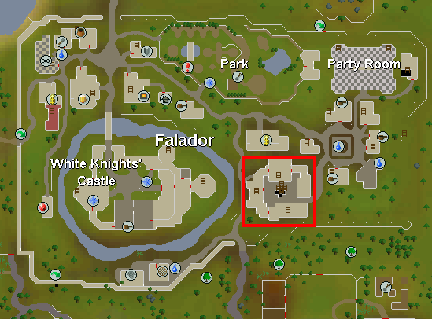
You will be required to have level 60 mining in order to enter the guild. You may use a stat boost found below in order to enter the mines.
The mine is located in South Falador and is extremely close to a bank.
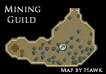
Inside the mines you will find 37 coal rocks and 5 mithril rocks. This is also where you can buy the skill cape.
Summoning mixes well into every skill and some familiars along the way can help you mine more ore or even
boosts your levels so you can mine more ores
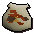
Desert Wyrm ( Level 16 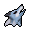) - The Desert Wyrm will give the player's mining a boost of 1 level.
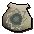
Void Ravager ( Level 34 ) - The Ibis grants an invisible +3 Fishing boost and can forage tuna and swordfish while you are fishing. Ibis can store up to 30 extra fish.
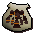
Obsidian Golem ( Level 73 ) - will give the player's Mining an invisible boost of 7 levels.
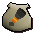
Lava Titans ( Level 83 ) - will give the player's Mining an invisible boost of 10 levels.
Mining Boosts
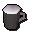
Dwarven Stout - Drinking this will raise a player's Mining and Smithing levels by 1 for a short time.
Mature Dwarven Stout - can raise Mining temporarily by up to 6; however, it can also decrease it by up to 6.
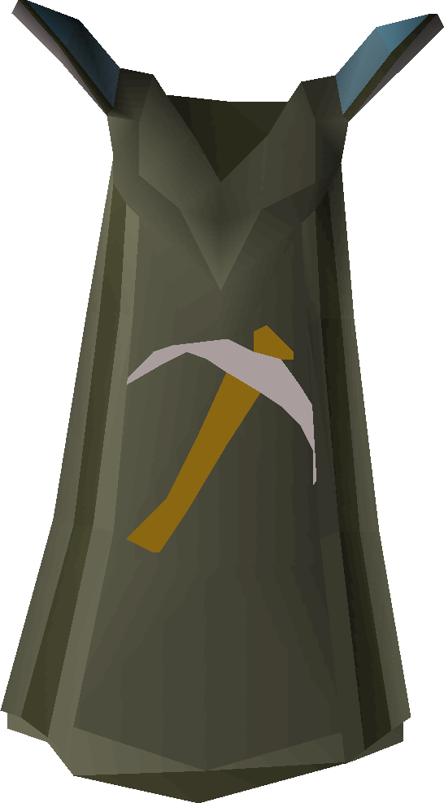 Skill Mastery
In 2009scape, we had decided in the polls that we would add Skill Cape Perks in the game. You are able to find more perks by clicking here. It has been decided that the Mining Skill Cape that would have the following perk: Your mastery of mining has brought you a great familiarity with the grain of rocks. It becomes slightly faster to mine any ore.
Note: If you see something not on this page that currently is in-game please let Summer know.